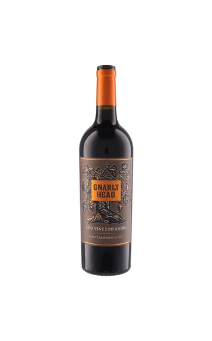
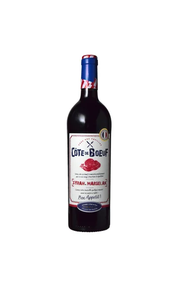
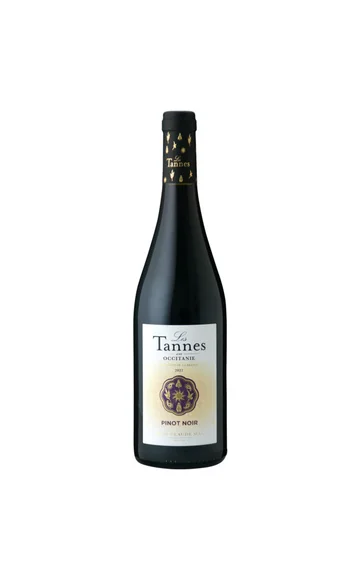
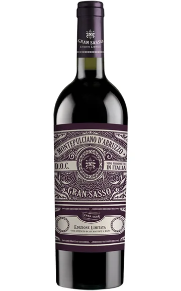
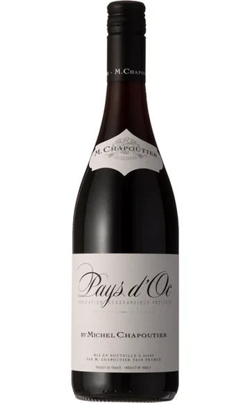
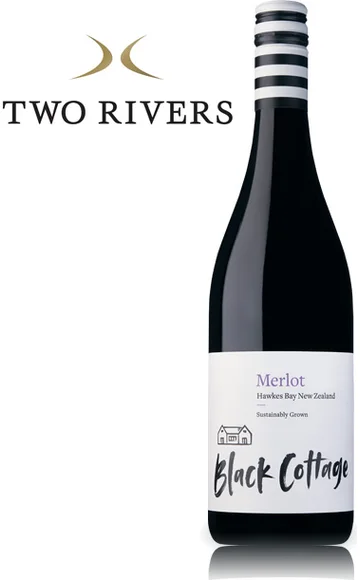
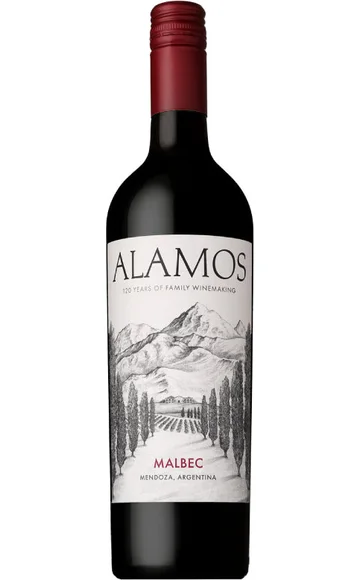
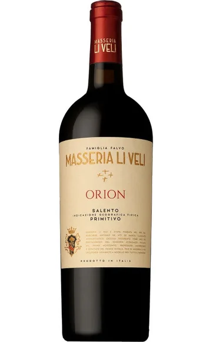
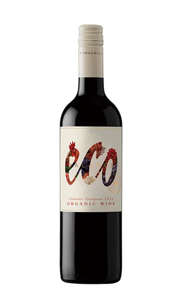
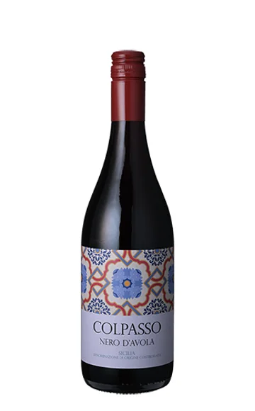

WINE JOURNAL
3,000円以下の
安ウマ赤ワイン10選
食事と会話に寄り添う、豊かな一杯。
赤ワイン選びは「高いほどおいしい」「濃いほど上質」と決めなくて大丈夫。税込3,000円以下でも、ピノ・ノワール、メルロー、シラー、マルベック、イタリアの土着品種など、好みを探す選択肢は豊富です。東京のワイン会に興味がある方や、友人との食事・交流会で赤ワインを楽しみたい方へ、ブランドの重複を避けた10本を写真付きで紹介します。
選定基準・価格について
選定条件：モトックス、日本リカー、サザンクロス、ファインズ、WINE TO STYLEの取り扱いから選んでいます。泡・白・赤の3記事を通じ、同じブランドは重複させていません。
価格確認日：2026年10月21日。参考販売価格は各リンク先で確認した750ml・1本の税込価格です。送料・クール便料金は別途。市場平均・最安値ではなく、割引価格を含む販売例です。価格・在庫・年号は変わるため、購入時にご確認ください。
ワイン会で楽しむ、赤ワインの選び方
渋みが気になるならタンニンの感触、食事に合わせたいなら料理の味付け、香りを楽しみたいなら品種を選ぶ軸に。濃さの競争にせず、自分が心地よいと思う赤を探しましょう。暖房の効いた室内では温まりすぎることもあるので、室温という言葉だけに頼らず様子を見てください。

01 / RED
ナーリー・ヘッド オールド・ヴァイン ジンファンデル
¥2,640税込・参考価格
アメリカ／カリフォルニア
輸入元：モトックス750ml
熟した果実のボリュームを楽しみたい方へ。ブラックチェリーやラズベリー、チョコレート、バニラやスパイスを思わせる香りが特徴のジンファンデルです。赤ワインの果実味をたっぷり感じたい食卓の候補に。「濃い」「軽い」だけでなく、どんな香りが好みかを探す入口にもなります。
PAIRING / 料理の提案バーベキュー、甘辛いソースのハンバーグ。
TALK / ワイン会での楽しみ方料理をひと口食べる前後で、果実やスパイスの感じ方が変わるか比べましょう。
商品情報を見る ↗
価格・写真の参照元
価格確認先：UNCORK（モトックス直営） ↗
写真参照：モトックス ↗
価格確認：2026年10月21日。送料別。ラベル・年号は販売品と異なる場合があります。

02 / RED
コート・ド・ブッフ
¥2,200税込・参考価格
フランス／ラングドック・ルーション
輸入元：モトックス750ml
名前はフランスの骨付き牛リブロース料理に由来。シラーとマルセランを使った、肉料理と一緒に選びたいフルボディの赤です。ステーキの日のワインを決めたいとき、料理から逆算して選ぶ分かりやすさも魅力。特別な知識がなくても「今日は何を食べる？」からワインの話を始められます。
PAIRING / 料理の提案牛肉のステーキ、ローストビーフ。
TALK / ワイン会での楽しみ方料理の塩やソースの有無で、ワインとのまとまりを比べてみてください。
商品情報を見る ↗
価格・写真の参照元
価格確認先：UNCORK（モトックス直営） ↗
写真参照：モトックス ↗
価格確認：2026年10月21日。送料別。ラベル・年号は販売品と異なる場合があります。

03 / RED
レ・タンヌ オクシタン ピノ・ノワール
¥1,760税込・参考価格
フランス／ラングドック
輸入元：モトックス750ml
ピノ・ノワールを高価な品種と思っている方にも試しやすい、南フランスの一本。ジューシーな果実味と柔らかなタンニン、ほどよいコクを備えたスタイルです。濃厚な赤だけでリストを埋めたくない会にも候補を。軽さと物足りなさを同じものと考えず、香りや食事との相性を楽しんでみましょう。
PAIRING / 料理の提案鶏肉のロースト、きのこのソテー。
TALK / ワイン会での楽しみ方しっかりした赤の前に飲み、果実の香りや渋みの感触を言葉にしてみましょう。
商品情報を見る ↗
価格・写真の参照元
価格確認先：UNCORK（モトックス直営） ↗
写真参照：モトックス ↗
価格確認：2026年10月21日。送料別。ラベル・年号は販売品と異なる場合があります。

04 / RED
グラン・サッソ モンテプルチアーノ・ダブルッツォ
¥1,870税込・参考価格
イタリア／アブルッツォ
輸入元：日本リカー750ml
ワイルドベリーを思わせる果実の香りと、ほどよいタンニンを楽しむ赤。グラン・サッソは、イタリア中部アブルッツォの品種を手頃に知る候補です。「モンテプルチアーノ」はこのワインではブドウの名前。土地の名前や格付けを難しく覚える前に、料理と合わせながら名前に親しんでみてください。
PAIRING / 料理の提案トマトソースのパスタ、サラミ。
TALK / ワイン会での楽しみ方コルパッソとイタリアの品種を飲み比べ、酸と果実のバランスに注目しましょう。
商品情報を見る ↗
価格・写真の参照元
価格確認先：Your Cellar（日本リカー直営） ↗
写真参照：日本リカー ↗
価格確認：2026年10月21日。送料別。ラベル・年号は販売品と異なる場合があります。

05 / RED
M.シャプティエ ペイ・ドック ルージュ
¥1,980税込・参考価格
フランス／ラングドック・ルーション
輸入元：日本リカー750ml
ローヌで知られるM.シャプティエが、南フランスのブドウで造るペイ・ドックの赤。果実の香りと品種らしい表情を、日常の食卓で楽しむための候補です。産地の上位銘柄から始めなくても、造り手のワインに触れる入口はあります。シラーという品種を覚えたいときにも選びやすい一本です。
PAIRING / 料理の提案ラムのソテー、黒胡椒を使った肉料理。
TALK / ワイン会での楽しみ方コート・ド・ブッフのブレンドと、シラーの共通点があるか探してみましょう。
商品情報を見る ↗
価格・写真の参照元
価格確認先：Your Cellar（日本リカー直営） ↗
写真参照：日本リカー ↗
価格確認：2026年10月21日。送料別。ラベル・年号は販売品と異なる場合があります。

06 / RED
ブラックコテージ ホークスベイ メルロー
¥2,750税込・参考価格
ニュージーランド／ホークスベイ
輸入元：サザンクロス750ml
ニュージーランドの赤はピノ・ノワールだけではありません。トゥーリバーズが手掛けるブラックコテージには、ホークスベイのメルローという選択肢も。カシスやクランベリーを思わせる果実に、スパイスやきのこのニュアンスが重なるスタイルです。細かなタンニンとなめらかな余韻に注目したい一本。
PAIRING / 料理の提案豚肉のロースト、きのこを添えたハンバーグ。
TALK / ワイン会での楽しみ方渋みの強弱だけでなく、舌に触れるタンニンの細かさを意識してみましょう。
商品情報を見る ↗
価格・写真の参照元
価格確認先：Southern Cross Wine Club ↗
写真参照：サザンクロス ↗
価格確認：2026年10月21日。送料別。ラベル・年号は販売品と異なる場合があります。

07 / RED
カテナ アラモス マルベック
¥2,420税込・参考価格
アルゼンチン／メンドーサ
輸入元：ファインズ750ml
熟したブラックベリーを思わせる果実に、スパイスや黒胡椒のニュアンス。アルゼンチンのマルベックを試したい方への候補です。フレンチオークとアメリカンオークを併用した樽で熟成し、しっかりしたタンニンを備えるスタイル。カベルネ以外で飲み応えのある赤を探すときにも考えてみてください。
PAIRING / 料理の提案牛肉のグリル、ミートパイ。
TALK / ワイン会での楽しみ方同じ価格帯のジンファンデルと、果実の印象や渋みを比べると話題が広がります。
商品情報を見る ↗
価格・写真の参照元
価格確認先：THE CELLAR ↗
写真参照：THE CELLAR ↗
価格確認：2026年10月21日。送料別。ラベル・年号は販売品と異なる場合があります。

08 / RED
マッセリア・リ・ヴェリ オリオン プリミティーヴォ
¥2,970税込・参考価格
イタリア／プーリア
輸入元：ファインズ750ml
チェリーを思わせる果実味に、シナモンやナツメグのようなスパイス。力強さとなめらかな口当たりを併せ持つ、プーリアのプリミティーヴォです。オリオンは、南イタリアの赤を一歩広げたい方への候補。参考価格は予算上限に近い2,970円なので、購入時の価格変更も確認して選びましょう。
PAIRING / 料理の提案トマト煮込みの肉料理、ソーセージ。
TALK / ワイン会での楽しみ方ナーリー・ヘッドのジンファンデルと、似ている点や異なる点を話してみましょう。
商品情報を見る ↗
価格・写真の参照元
価格確認先：THE CELLAR ↗
写真参照：THE CELLAR ↗
価格確認：2026年10月21日。送料別。ラベル・年号は販売品と異なる場合があります。

09 / RED
エコ・バランス オーガニック・カベルネ・ソーヴィニヨン
¥1,386税込・参考価格
チリ／セントラル・ヴァレー
輸入元：WINE TO STYLE750ml
有機栽培のブドウを使うエミリアーナのエコ・バランス。チェリーのような果実の香りと、ジューシーでなめらかなタンニンを楽しむカベルネです。手頃な価格で、まず一本を食卓に置きたいときの候補に。オーガニックという選択とともに、自分が好きな香りや口当たりかも大切にしてみてください。
PAIRING / 料理の提案ミートソースのパスタ、ラザニア。
TALK / ワイン会での楽しみ方カベルネの渋みが気になる方も、料理と合わせた感想を無理なく共有してみましょう。
商品情報を見る ↗
価格・写真の参照元
価格確認先：WINE TO STYLE公式 ↗
写真参照：WINE TO STYLE ↗
価格確認：2026年10月21日。送料別。ラベル・年号は販売品と異なる場合があります。

10 / RED
コルパッソ ネロ・ダーヴォラ シチリア
¥1,914税込・参考価格
イタリア／シチリア
輸入元：WINE TO STYLE750ml
シチリアの土着品種ネロ・ダーヴォラを、手頃な価格で知る一本。通常のこちらのキュヴェにも、陰干しブドウで造ったワインを少量ブレンドすると輸入元は紹介しています。同ブランドの「バレル・セレクション」とは別の商品なので、購入時は名前まで確認を。品種の個性から選ぶ楽しみが広がります。
PAIRING / 料理の提案トマトと茄子のパスタ、肉のグリル。
TALK / ワイン会での楽しみ方グラン・サッソと並べ、イタリアでも地域と品種で印象がどう変わるか話してみましょう。
商品情報を見る ↗
価格・写真の参照元
価格確認先：WINE TO STYLE公式 ↗
写真参照：WINE TO STYLE ↗
価格確認：2026年10月21日。送料別。ラベル・年号は販売品と異なる場合があります。
まずは3本で、小さな飲み比べを
レ・タンヌ オクシタン ピノ・ノワール、ブラックコテージ ホークスベイ メルロー、カテナ アラモス マルベック。掲載した参考販売価格の合計は6,930円です。ピノ・ノワール、メルロー、マルベックを、異なる造り手で比べる組み合わせです。「香り」「渋み」「後味」のどれか一つをテーマにすると、ワインに詳しくない人も自分の言葉で参加しやすくなります。すべて飲み切ることを目標にせず、人数や飲める量に合わせて本数を調整してください。
渋い赤が苦手でもワイン会を楽しめますか？
もちろんです。苦手な味を無理に飲む必要はありません。主催者に好みを伝え、白や泡も含めて選んでみましょう。赤の飲み比べも、好きな香りや口当たりを見つけるための楽しみ方です。
味わいの紹介は輸入元・販売元の商品情報を参考に編集したもので、全商品の実飲レビューではありません。料理と飲み比べの組み合わせは編集上の提案です。商品写真の参照先は各カードの「価格・写真の参照元」に記載しています。
東京で、ワインと会話を楽しみたい方へ
GLASS VIBEは、東京・湯島を拠点に準備しているワイン交流会です。一人でも、ワインに詳しくなくても、自分のペースで。記事で紹介した銘柄がイベントで提供されるとは限りません。